婷曼逸案例解析婷曼逸塑身内衣是华与华的美业标杆客户。与华与华合作三年以来，公司总部营收连续高速增长：2023 年增长 69 . 57 %， 2024 年增长 72 . 25 %， 2025 年还能再增长 60 %以上，在经济下行期间创造了令人瞩目的增长奇迹。截至 2025 年 11 月初，婷曼逸全国合作门店数量已突破 14 , 000 家，其中 4529 家门店换上了婷曼逸品牌专属门头。项目背景：婷曼逸的故事，始于四川泸州。创始人李支梦白手起家—— 16 岁在纺织行业弹棉被，2000 年在服装厂当缝纫工人， 2003 年与夫人晏禄丽用 1000 元在瓦房里开了一个美发
店，从此进入美业。 2018 年，李支梦创立了婷曼逸品牌。
在与华与华合作前，婷曼逸虽然已经铺开了市场，但依然面临着种种经营难题：产品同质化严重、渠道粘性差、招商大会邀约困难等等，而其中最重要的问题，是没有真正的建立品牌。为了解决婷曼逸“有产品、无品牌；有渠道、无壁垒”的难题，实现从“卖产品”到“做品牌”的根本性转变。 2022 年 10 月，婷曼逸创始人李支梦李老师找到华与华，开启了双方的正式合作。在合作的第一个三年里，华与华帮助婷曼逸建立了品牌，实现了惊人的销量增长，甚至影响了行业。今天我们将从以下五个方面，为大家详细拆解婷曼逸的成功秘诀：
1 、用华与华品牌三角形建立婷曼逸品牌；2 、门头战略加管理陪跑，打造渠道壁垒；3 、重塑招商大会，带来大幅营收增长；4 、找到事业理论，用创意落地企业文化；5 、开发新一代产品，制定产品战略。
1用华与华品牌三角形为婷曼逸品牌定型

在华与华方法中，“品牌三角形”代表着品牌的一切，建立品牌就是建立产品结构、话语体系和符号系统，没有这三条“边”，就等于没有品牌。
双方合作后做的第一件事，就是用华与华品牌三角形建立婷曼逸品牌，实现品牌定型。
▲华与华合作前婷曼逸符号
恢复和保护汉语的正常使用，建立婷曼逸话语体系在与华与华合作前，婷曼逸的产品并不叫塑身内衣，而是叫“身材管理器”。虽然这个名字会让第一次接触到的人难以理解，但是在当时的塑身内衣行业却广为流传，因为它听起来“高大上”、可以让产品卖的更贵，反而是直接叫塑身内衣显得过于直白、“太low ”。

王阳明说：“破山中贼易，破心中贼难”，为了所谓的“逼格”而起了一个难以理解的品类名，就是一个标准的心中贼。企业走弯路，通常就是因为心中有一些莫名的纠结，把本来靠常识一眼就能看明白的东西，变成了纠结的存在，最后反而把自己给搞糊涂了。恢复和保护汉语的正常使用，也是华与华的重要使命。华与华为婷曼逸做的第一件事，就是恢复叫“婷曼逸塑身内衣”。
品牌追求的是零成本沟通，一个简单直白的品类名可以极大的降低消费者的沟通成本、更快的做出购买决策。后来，在婷曼逸改回“塑身内衣”之后，行业内的很多品牌也重新叫“塑身内衣”了。

我们把塑身内衣品类直接加入婷曼逸的品牌名，将其中文品牌名改为“婷曼逸塑身内衣”，英文品牌名则采用首字母缩写+品类的方式，定为“ TMY SHAPEWEAR ”。
定了一个好名字，现在婷曼逸还需要一句强有力的广告语。婷曼逸以前的广告语叫“好身材，穿出来，我穿婷曼逸”，这句话并不是大众口语报道，消费者也不会说；其次它体现是品类价值、不是品种价值，不够独特；另外整个句子太长，不够简洁，难以大范围传播。“品牌活在大众的嘴上”，品牌谚语要从每天谈论婷曼逸的话语中来，要回到市场上搜索真正的大众口语报道。回顾我们的走访经历，几句话映入我们的脑海：“以前不想穿，现在越穿越想穿”、“现在天天穿腰甲，不穿不得劲儿”…最后，我们把婷曼逸的品牌谚语定为：婷曼逸塑身内衣，越穿越满意！
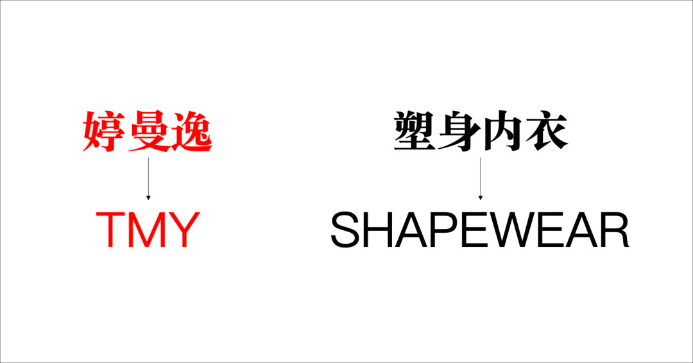
这句断言斩钉截铁、不容置疑，传递了婷曼逸塑身内衣的产品价值和服务价值，同时还是一句简洁、押韵、使人愉悦的超级句式，并且包含了行动——越穿越满意！符号系统：占领品类文化符号一个伟大的品牌，就是一套伟大的符号系统。符号能够浓缩承载极大的信息量、影响人的思想行为，并在品牌战略中发挥巨大的价值。在华与华，我们创作的是“超级符号”，超级符号是人人都看得懂的符号，是人人都按照它的指引行事的符号，它能在一夜之间成为消费者的老朋友、发动大规模购买。创作婷曼逸超级符号的第一步，就是找到它的文化母体。我们发现塑身内衣在人类历史上已经存在了 3600 年，现代塑身内衣的雏形则兴起于 16 世纪的欧洲王室，被称为“ Corset ”（紧身胸衣）。
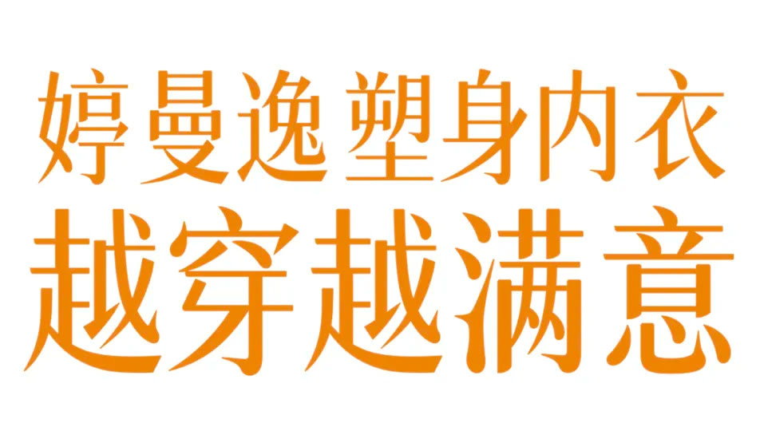
塑身内衣行业最大的文化母体就是产品外观本身，于是我们把“ Corset ”的形状和婷曼逸相结合，创作出了婷曼逸的超级符号：
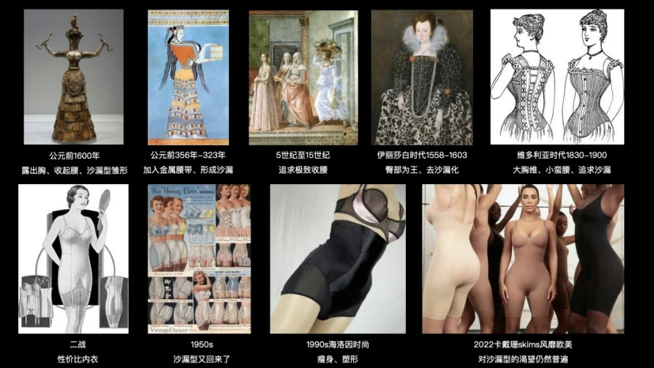
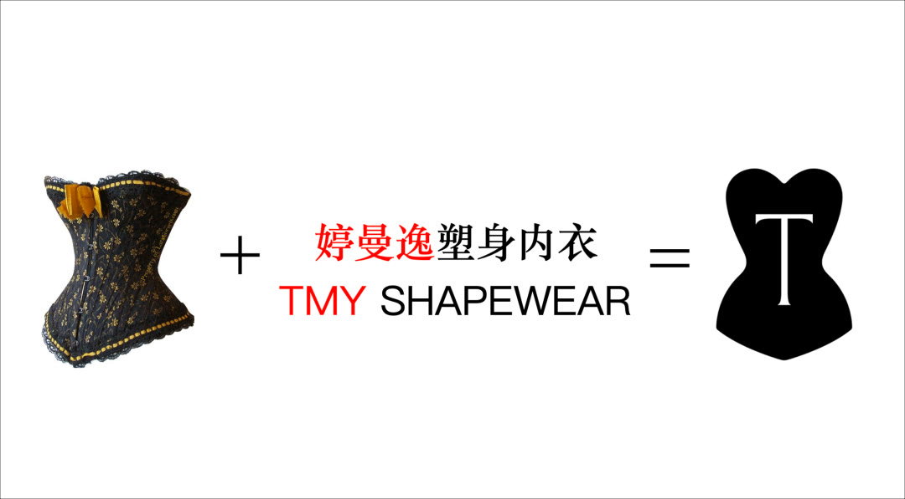
Corset 是塑身内衣行业最古老的文化母体，仅靠轮廓就能分辨行业属性，一看就知道婷曼逸是卖什么的；符号中间结合婷曼逸的首字母 T ，富有品牌的戏剧性；全新的超级符号不仅简洁大气，具有大牌感和规模感，还易于描述、便于传播。再看一下华与华前和华与华后的对比：
最后，我们将婷曼逸的品牌色定为橙色，婷曼逸橙，心想事成！橙心橙意，马上成交！
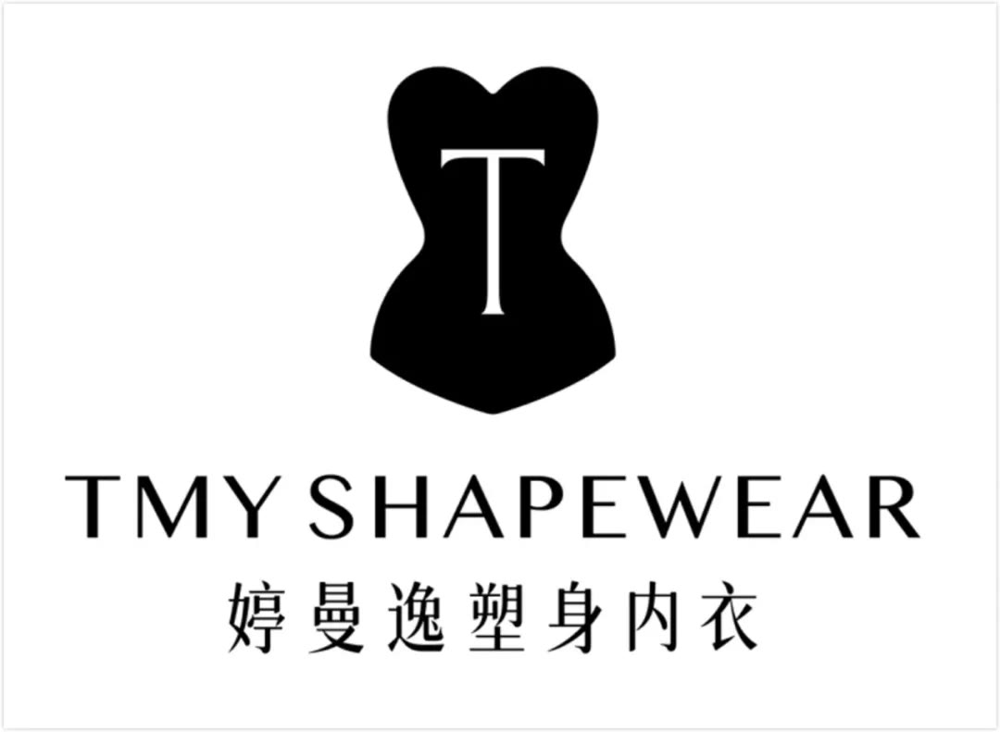
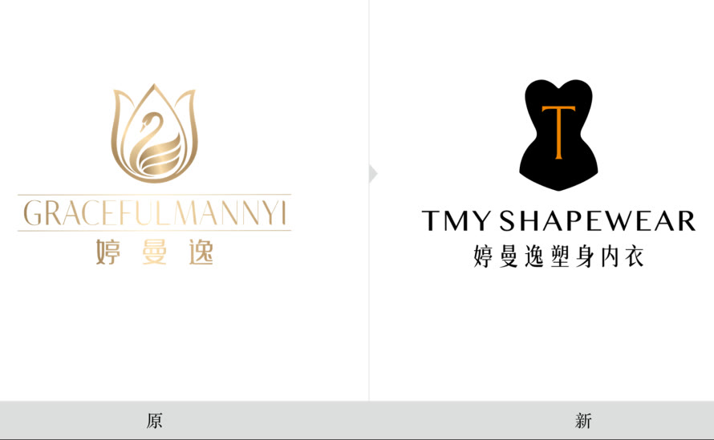
通过华与华方法，婷曼逸建立了全新的品牌资产，实现了品牌定型。三年的合作中，华与华更是通过不断的提出新创意为婷曼逸建立了更多品牌资产，丰富了婷曼逸的品牌资产“存钱罐”。
2门头战略加管理陪跑打造渠道壁垒婷曼逸塑身内衣本质上是一个“美业项目”，它并没有自己的直营门店，而是作为美业门店销售的产品之一出现在门店当中。消费者在门店中购买日常产品和服务的同时，也可以额外购买婷曼逸的塑身内衣产品，从而为门店带来额外利润，帮助店家赚钱。
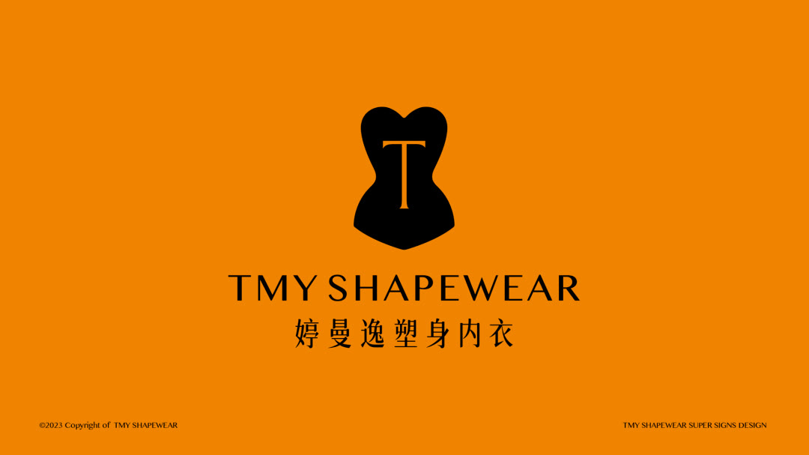

婷曼逸靠这样的模式在成立短短几年中就与全国各地一万多家美业门店产生了合作、铺开了渠道，带来了初期的业务规模。但这样的模式同时也带来了一个问题，那就是品牌和门店的合作关系始终是“弱关系”，店家卖完一批货随时可以选择不再合作，“就像谈恋爱随时可以分手一样”，这导致了婷曼逸缺乏有力的渠道壁垒。2023 年，为了让婷曼逸建立渠道壁垒、落地品牌资产，我们为婷曼逸规划了门头战略。让门店更换婷曼逸的专属门头，会为婷曼逸带来渠道排他、建立品牌、销售促进等等一系列重大价值。在课题实际落地的过程中却遇到了重重问题：渠道执行力不足、课题缺少负责人、执行缺乏管理追踪等问题，创始人李老师几乎要一个人跟进所有课题细节；为此，华与华用四个关键动作来帮助婷曼逸落地门头战略：第一步：华与华项目组深入一线，上门给经销商宣讲、量尺，现场收取定金，挨家挨户和老板娘们沟通。第二步，我们将首批落地的门头样板店做成标杆案例，并制作了宣传推广物料和门头落地标准，开始在婷曼逸组织内部推行更换政策。
▲华与华高级项目总监刘群越上门给经销商宣讲
第三步，华与华全程监督门头更换过程，一个一个审核门头样式，从设计到制作到安装全程陪跑，保障落地效果。
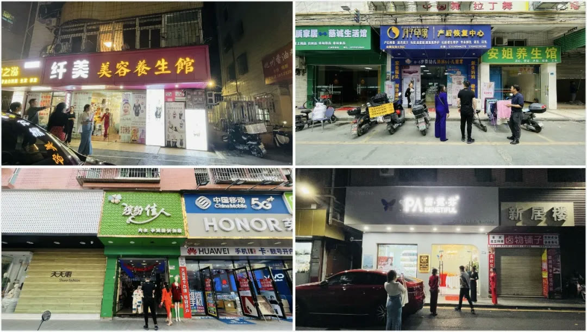
要想推动门头全国落地，光靠我们自己显然杯水车薪，问题的关键在于调动婷曼逸内部的组织管理能力。于是，我们提出了第四步关键动作：带婷曼逸开经营会！从管理层抓起，帮婷曼逸搭建管理和追踪体系。华与华从更换政策、人员安排、激励机制、经营会议程设置等方面对婷曼逸进行了全面的管理辅导，手把手带着婷曼逸开起了管理层经营会。在长达 12 小时的首次经营会上，李老师下达了完成年度门头战略目标的死命令，我们见证了婷曼逸各子公司高管现场签下门头军令状，“保证完成任务“；同时大家各抒己见，对落地的各种问题提出了真切的建议。
会议结束的那一刻，真正的改变开始了，所有门头落地数据都在一线执行和经营会的追踪反馈中滚动更新。截至发稿日，婷曼逸在全国落地的门头数量已经超过 4529 家，婷曼逸正式走向了美业万店品牌！几千家门头落地，让婷曼逸建立了扎实的渠道壁垒，而更重要的是，在门头战略中生长出的组织管理能力，让婷曼逸拥有了企业经营上的隐形壁垒。
3重塑招商大会带来大幅销量增长
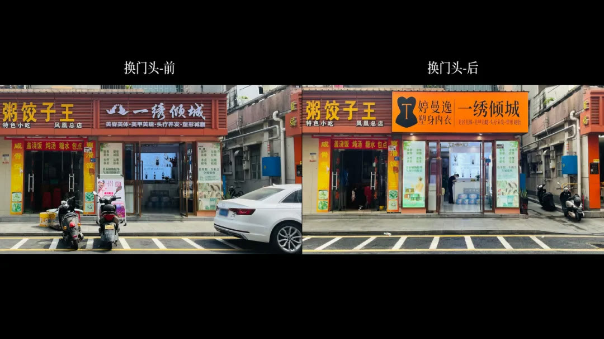
婷曼逸业绩高速增长的背后，有一个关键绝招——会销。在过去几年里，婷曼逸每年都会召开几场全国性的招商大会，这种招商大会的本质就是会销。很多人一听到会销，脑中浮现的可能是“成功学讲座”或者“打鸡血培训”，但这些都是歪门邪道的江湖骗术。正规的会销就是一对多、以成交为目的的销售形式，常见的招商会、订货会、产品发布会、行业展会，甚至直播带货，都属于会销，都是让潜在客户在同一场景下批量成交。在过往的经营中，每年在全国各地举办的巡回招商大会一直驱动着婷曼逸的渠道发展。这种大会的参会人数一般都在千人左右，大家在大会上学习销售技巧、了解婷曼逸的产品、互相交流经验，然后回到门店里用学习到的知识和经验销售更多婷曼逸产品。可以说，转动整个婷曼逸业务的关键，就是大型招商会。
然而，到了 2023 年，婷曼逸的招商会却陷入了瓶颈：大会内容重复度高、邀约困难，参会人数越来越少，会上产出的销售业绩也不太稳定。在华与华帮助婷曼逸重塑招商大会的前两个月，婷曼逸的大会参与人数已经从 1000 多人减少到了几百人，这不仅会影响销售业绩，更重要的是影响了整个组织的士气跟渠道的信心。此时的婷曼逸，迫切需要一个创意来重新引爆渠道战略。
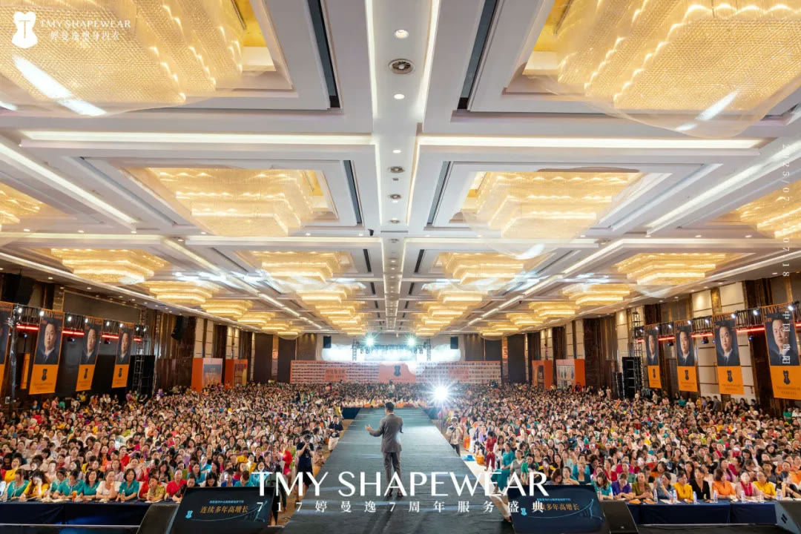
为什么加盟商不来参加你的招商会？每一家企业都应该反复思考这个问题。在华与华方法中，开发产品等于开发购买理由，如果我们把招商会当作一个产品，那加盟商对这个产品不买账本质上就是因为这个产品缺失了购买理由。那么，婷曼逸招商大会的购买理由到底什么呢？我们带着疑问走向了婷曼逸的终端门店。在访谈门店老板娘时，我们问了参加过多次大会的店家一个关键问题：“你参加大会的目的是什么？”店家直白的回答点醒了我们——“那肯定是赚钱啊”“我们出去学习不就是为了提升营业额吗”“想去看看别人是怎么赚到钱的…等学回来的东西落地了、赚了钱，还会再去参加”。
店家来参会的目的，其实就是为了学到知识、开单赚钱，所以，华与华为大会重新开发了重要的购买理由：百万名店！我们将门店业绩突破百万的成功加盟商群体定义为渠道标杆，让她们站上招商大会的舞台、成为会场的主角，为大家讲述自己真实的销售经验和案例，以此来吸引更多店家来参会。每次大会我们让不同的百万名店老板娘为大家分享自己独特的经验，这样就解决了大会内容重复的问题，因为每个人的经验都不同，每次来到招商大会都会听到新鲜的案例和经验。
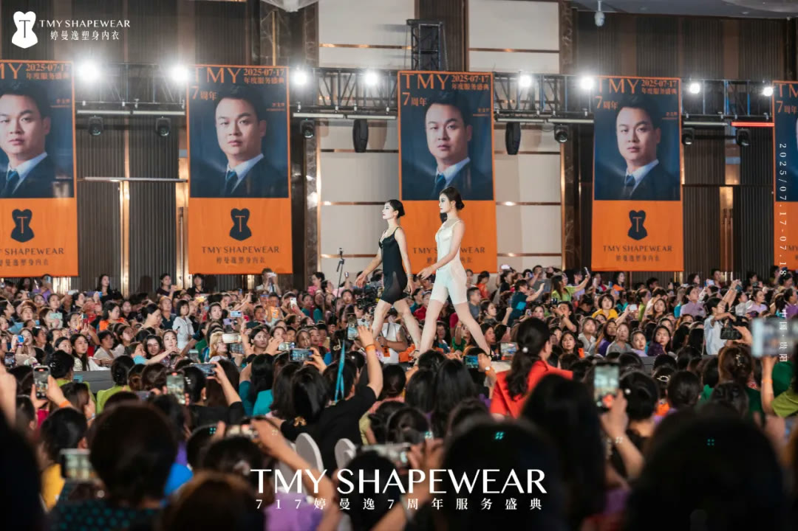
百万名店老板娘们的故事不仅可以教大家如何卖货，还可以激励更多人相信并加入婷曼逸，据此，我们创意了一句核心口号：加盟婷曼逸，百万好生意！
2023 年百万名店落地后，婷曼逸的招商大会规模一路飙升，以前要花 20 天时间线下邀约 1000 人，现在只需几小时参会者就能在线上自助抢光 4000 张门票，大家直呼“婷曼逸的大会门票比演唱会门票都难抢！”大会的声势越来越浩大，会上产出的销售业绩也节节攀升，百万名店所带来的业绩奇迹一次又一次上演。
现在，百万名店已经成为了婷曼逸重要的品牌资产，“加盟婷曼逸，百万好生意”也成为了一句流传于店家口中的响亮口号。
4找到事业理论用创意落地企业文化塑身内衣跟传统内衣不同，它并非一次性消费品，而是一个“服务型产品”。顾客买到手，并不意味着交易的结束，而是意味着服务的开始——老板娘要指导消费者如何正确穿戴和调节内衣，并且持续提供一对一的监督与“按摩调拨”服务，而这后续的一系列服务正是塑身效果的核心来源。如果在购买塑身内衣的一个月内，顾客能坚持穿，她的获得感会极强，身材改变后还会多次消费和转介绍，实现良性循环；而如果最开始没有坚持穿，顾客就可能对产品产生极大质疑，这对商家和婷曼逸都是巨大的伤害。婷曼逸的优秀店家可以做到日日不断地为消费者提供服务，有些商家甚至还会每天上门调拨，正是这些店家的用心服务给广大消费者带来了真实的身材改变，积累了婷曼逸优秀的市场口碑。但并不是所有婷曼逸的销售老师和店家都对服务都有如此清晰的认识。很多人忙于开新客、做成交，卖了货服务跟不上，导致伤害了客人，也断送了未来的销售来源，最终客人越来越少，“慢慢就卖不动了”。
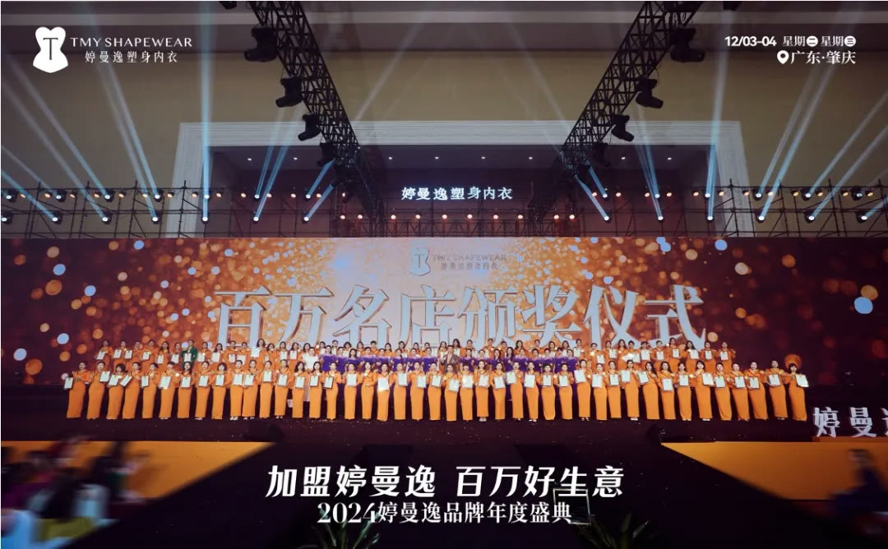
要想推动渠道持续出货，靠的是持续给老板娘和顾客提供扎实的服务。但是有形的内衣人人都会卖，无形的服务却缺乏标准认识，该如何让统一店家和老师的认识，让所有婷曼逸人把服务当成头等大事？在现代管理学之父彼得德鲁克提出的经典问题里，我们找到了答案。
“我们的事业是什么？”这是决定企业成败最重要的问题，“要回答这个问题，我们只能从外向内看，从顾客和市场的角度，来观察我们所经营的事业。”那么婷曼逸的事业是什么呢？婷曼逸的事业就是服务！婷曼逸的老师们靠服务店家来帮助店家出单、和店家持续合作；店家靠持续服务客人帮助客人改变身材、并吸引更多客人。服务是婷曼逸区别于其他塑身内衣品牌的核心，是驱动婷曼逸生意发展的根本，也正是婷曼逸“值钱”的原因！于是，我们将婷曼逸的事业理论定义为：服务改变命运！
服务改变顾客的命运，塑造曼妙身姿、成为幸福女人！服务改变老板娘的命运，赚到源源不断的钱、干成百万名店。婷曼逸的价值观是“让相信我们的人绝不后悔”，要做到这一点，靠的就是服务！然而，“服务改变命运”要想真正从一句口号走进婷曼逸人的心里，还需要配合具体的落地动作。真正有用的企业文化，不是挂在墙上的口号，而是组织行动的标尺；不是写在文件里的规范，而是流淌在个人行为里的共识。于是，我们提出了一系列创意来帮助婷曼逸的事业理论落地。
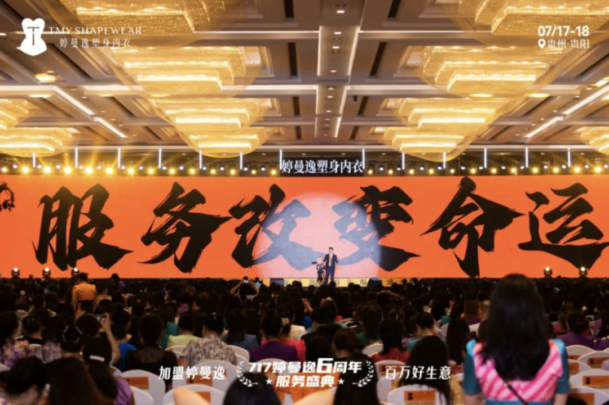
首先，华与华为婷曼逸创意了“金鞋奖”——一只刻有“服务改变命运”的金色高跟鞋奖杯。婷曼逸总部展厅中陈列着创始人李支梦及夫人晏禄丽在创业初期穿坏磨破的鞋。那时，他们每天奔走于美业门店之间，上门服务、洽谈合作，李老师说：“经常一个月跑烂一双鞋，有时候一天下来脚上磨出四个血泡。”
婷曼逸人常年踩着高跟鞋上门为店家服务，很多人甚至把高跟鞋的鞋跟都跑断了，“金鞋奖”就是代表婷曼逸事业理论的精神符号。
之后，华与华又提出了“婷曼逸百万服务案例大奖赛”的创意，用真金白银奖励好服务，给优秀店家颁发金鞋奖。
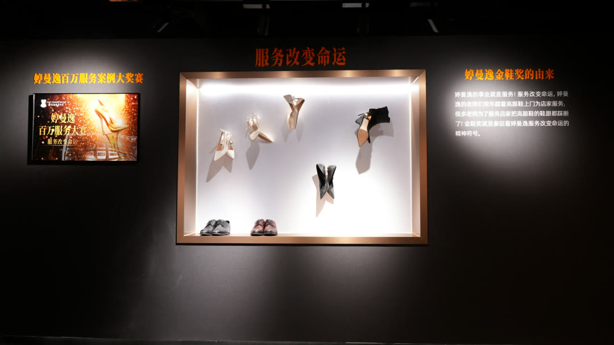
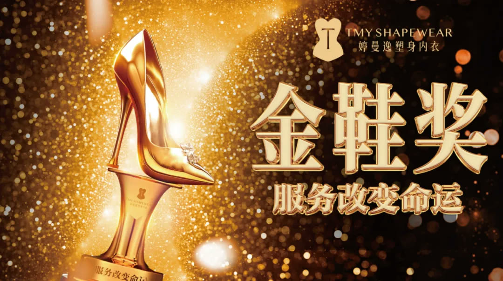
每次大赛之前，婷曼逸会向全国合作门店征集服务案例，最终在全国海选出十强选手，在大会上同台竞技，让老板娘们讲出自己的服务故事，由现场观众评比打分。
在 2025 年 717 大会上，婷曼逸百万服务案例大奖赛正式落地。当店主们为大家分享自己如何用真心换真心，通过服务帮助顾客蜕变身材、甚至改变人生时，很多在场的婷曼逸人都留下了感动的泪水。此外，我们还将婷曼逸成都总部的婷曼逸美体艺术馆改造成了“企业文化道场”，其中最大的亮点就是门口摆放的一只接近两米高的巨大金鞋奖奖杯。
2025 年 3 月，婷曼逸展馆开馆当天，创始人李老师站在金鞋奖前讲解时，一度泣不成声。
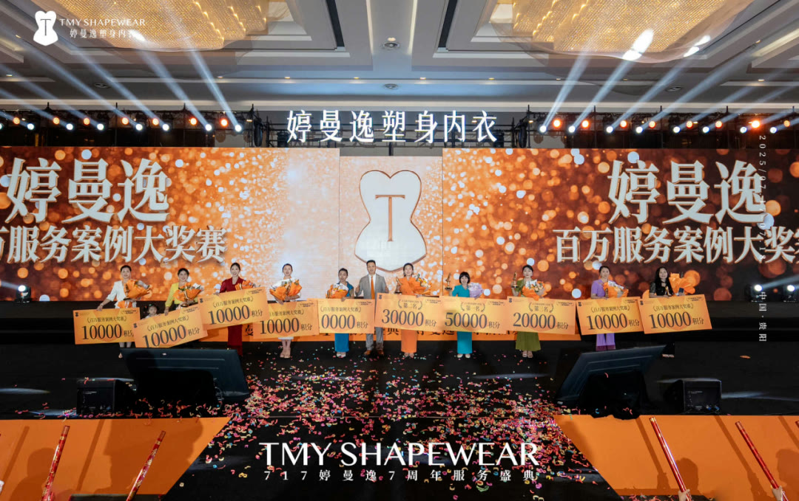
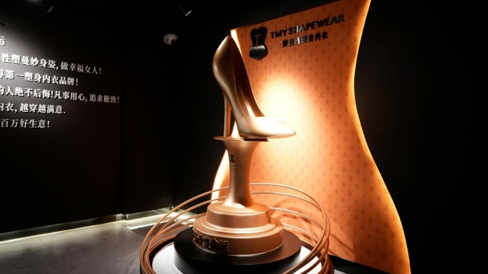
5开发新一代产品开启制定产品战略企业战略，就是产品战略。在与华与华合作前，婷曼逸一共推出过两代塑身内衣产品，新产品开发了接近三年却一直没有开发成功。2025 年，华与华全程参与了新一代婷曼逸中塑系列产品的开发工作，从品类选择到产品结构规划，甚至定价方向、外观设计、生产管理等环节，华与华都做到了全程陪跑，直至产品发布落地。
一个行业总有人选择走捷径，也总有人坚持脚踏实地。从踏入行业的第一天起，婷曼逸创始人李老师就立志要做一款即舒适又塑形的塑身内衣，于是他带着团队“从一根比头发丝还细的纤维开始自己研究”，要做出一款属于婷曼逸自己的舒适塑形产品。要想实现这样的效果，核心是面料。对于服装行业而言，面料就是产品壁垒的根基，很多世界著名服装品牌都有自己的独家面料，这是他们的核心资产。2025 年，婷曼逸联合莱卡公司成功研发出了一款在保持一定塑形功能的同时，又能做到贴身舒适的独家面料，婷曼逸用这块珍贵的面料开发出了新一代中塑系列产品。要想将这块面料私有化，就需要将其封装成可以传播的命名和符号。这款面料的核心特点是其独特的六角形编织结构，把面料对着光源看，可以直接看到一个个小小的六角形。有没有六角形的文化母体？我们想到了六角切割的钻石结构，于是我们将其命名为：婷曼逸莱卡黑钻面料！
黑钻是世界上最珍贵的钻石之一，本身就具有强大冲击力和记忆点，可以直观体现出面料的高端与独特性；同时借势知名品牌莱卡的行业地位，便形成了面料专有的命名创意。用六角钻石的符号加入代表婷曼逸的“ T ”，超级符号不思而得。有了独家面料以后，婷曼逸还面临一个难题需要解决——建立产品科学。过去 20 年，塑身内衣行业还没有一个完整的产品科学体系，夸大的宣传几乎成了常态，各种“黑科技”层出不穷，真正的好产品却寥寥无几。为了在产品上市后统一市场上的推广口径，防止夸大宣传的问题发生，华与华设计了一个关键元媒体：婷曼逸中塑系列产品手册。
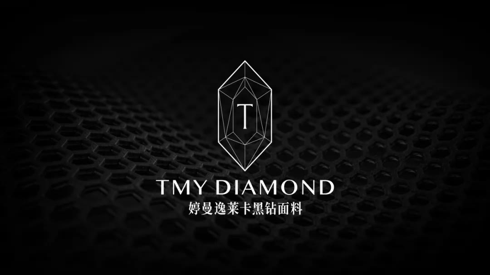
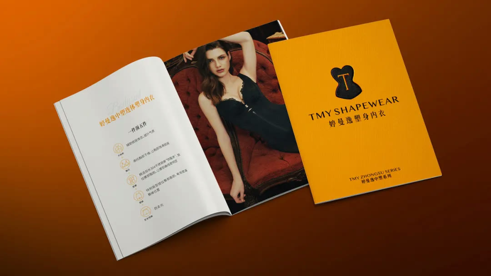
华与华为新一代婷曼逸中塑系列产品梳理了体系化的产品科学，其中每一个卖点细节在问世前都经过反复打磨，结合系列产品的研发思路与艰难历程，一起写进随产品附赠的产品手册中。同时，借这次新产品开发机会，华与华对婷曼逸的产品视觉做了全面升级，我们联合奢侈品拍摄团队一起为婷曼逸拍了一套“一看就贵”的产品图片，让婷曼逸在贩卖美丽的行业里逐步建立起“美丽壁垒”。
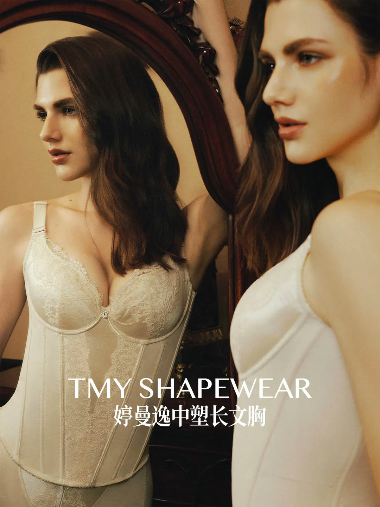
这本产品手册做到了不用推广人员多说一句话，就能自己代替品牌进行传播。封装好的卖点实现了信息对称，避免了夸大宣传；同时手册本身也是一种全新的元媒体，可以作为推广道具使用。从此以后，消费者拿到的不只是一件塑身内衣，而是一份带有仪式感的“塑身内衣行业知识与产品说明书”。
2025 年 7 月 17 日，婷曼逸品牌七周年服务盛典暨婷曼逸全球新品发布会在贵阳隆重举行，创始人李老师在大会上进行了以“突破”为主题的产品发布演讲。此次发布会不仅有 4000 名全国各地的婷曼逸家人现场参加，还首次实现了全程线上直播，上万人在手机上共同见证了新一代婷曼逸中塑系列产品问世。截至 2025 年 10 月，新一代婷曼逸中塑系列产品上市三个月销售额即突破 7000 万，婷曼逸再次震撼行业！全文总结最后，让我们一起来回顾，华与华助力婷曼逸实现连续三年营收增长超过 50 %背后的五大关键动作。1 、用华与华品牌三角形建立婷曼逸品牌：“好好说话”，将品类从身材管理器改回塑身内衣；创意品牌谚语“婷曼逸塑身内衣，越穿越满意”；找到行业最大文化母体，打造婷曼逸超级符号。
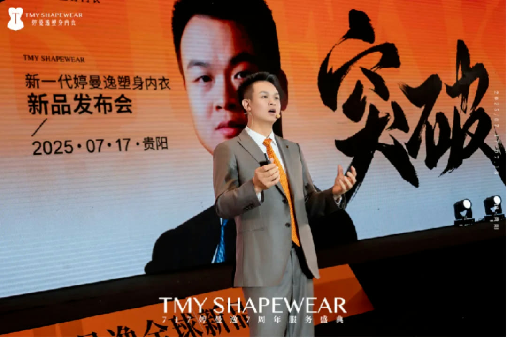
2 、门头战略加管理陪跑，打造渠道壁垒：制定门头战略、建立落地标准，用经营会推动 4529 婷曼逸门头全国落地，助力婷曼逸走向万店品牌。3 、重塑招商大会，带来大幅营收增长：为招商大会建立购买理由“百万名店”，显著提升邀约效率，促进招商大会业绩产出，带来大幅营收增长。4 、找到事业理论，用创意落地企业文化：确定事业理论“服务改变命运”，创意“金鞋奖”和“婷曼逸百万服务案例大奖赛”，实现企业文化落地。5 、开发新一代产品，制定产品战略：创意“婷曼逸莱卡黑钻面料”超级符号，梳理塑身内衣行业产品科学，开发产品手册元媒体，实现新品上市即畅销。
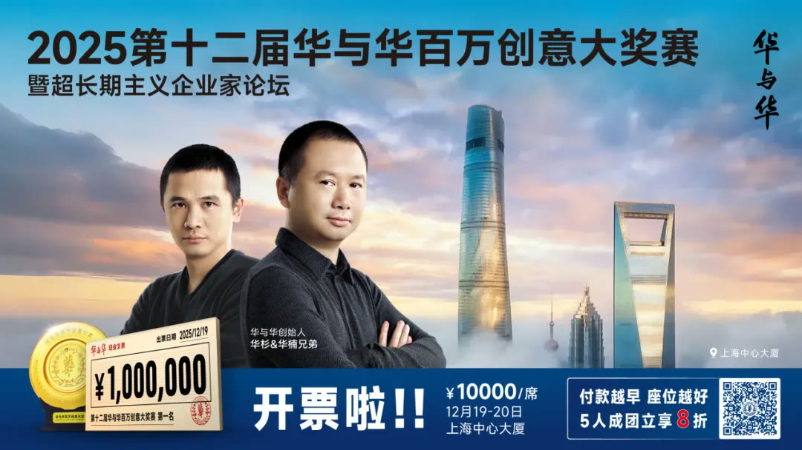